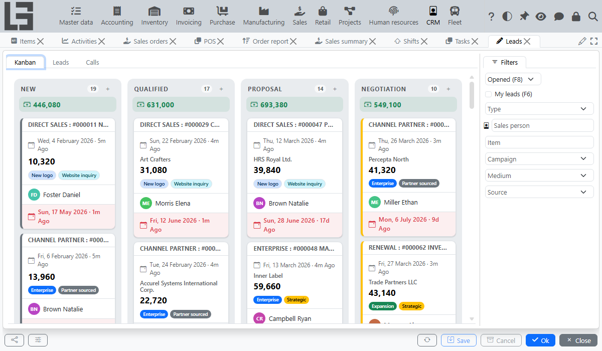
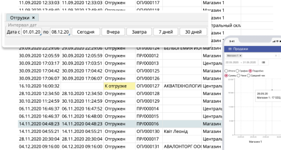
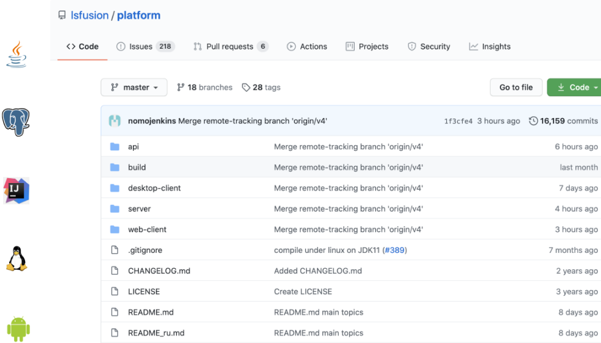

Open source · Apache 2.0 · На власному сервері
Open-source ERP і CRM,
побудована навколо вашого бізнесу.
Керуйте продажами, складом, фінансами, виробництвом і проєктами в одній гнучкій системі. Почніть із готових модулів і адаптуйте будь-які процеси без ліцензійної залежності.
- $0за ліцензії
- 10 модулівєдина база даних
- Ваш серверваш код і дані

Одна система. Усі процеси.
Почніть із потрібних модулів.
Додавайте решту в міру зростання.
Для оптової, роздрібної, електронної комерції, послуг, підряду, дрібносерійного та замовного виробництва.
-
Закупівлі
Управління процесом закупівель та контроль документообігу – від створення запиту цінової пропозиції постачальникам до оплати та розміщення товарів на складах.
-
Продажі
Просування товару, управління ціновою політикою, налаштування знижок, реалізація та отримання платежів.
-
Склад
Управління всіма складами в одному місці. Система адресного зберігання, партійного обліку, контроль запасів.
-
Виробництво
Автоматизація виробничих процесів. Контроль та списання витрачених матеріалів, постановка на облік готової продукції.
-
Розрахунки
Контроль усіх фінансів компанії, умов постачання, оплати та дебіторської заборгованості, швидка реєстрація повернень.
-
Послуги
Реєстрація та відстеження надання послуг, облік витрачених матеріалів та часу, планування та розподіл замовлень.
-
Місце касира
Можливість замінити касовий апарат звичайним комп'ютером
-
Проекти
Управління завданнями, призначення співробітників, облік витраченого часу, витрачених матеріалів, наданих послуг
-
Кадри
Підбір персоналу, облік робочого часу, розрахунок і виплата заробітної плати
-
CRM
Організація роботи з лідами, управління воронкою продажів, інтеграція з email, IP-телефонія
Підходить для програмістів SQL, економістів, бізнес-аналітиків
Доопрацьовувати на базі MyCompany зможе будь-який просунутий користувач Excel.
- Встановлюється на власний сервер за 10-15 хвилин
- Кросплатформний, працює на різних ОС
- Для настільних комп’ютерів і мобільних пристроїв
- Розроблено на lsFusion, мові 5-го покоління


MyCompany є і завжди буде рішенням з відкритим кодом.
Це внесок нашої команди в спільноту з відкритим кодом: для нас важливо, щоб найсучасніші технології були доступні не лише для великого бізнесу, а й для кожного.
70% великих роздрібних мереж в Білорусі працюють на тій же платформі, що і MyCompany - lsFusion. Ця платформа розроблена нашою компанією LuxSoft і на ній виготовляються наші комерційні продукти.
Дізнайтеся більше про платформу >Ми постійно розвиваємо платформу
lsFusion, а отже, і MyCompany
- Підходить для складних, високонавантажених проектів
- Одночасні користувачі
- 1000
- Дані
- 3 Тб
- Розроблено за запитом бізнесу, а не навпаки
Гнучка бізнес-логіка, можливість швидкої реалізації будь-якого алгоритму.
- Може бути інтегрований з бухгалтерськими системами, інтернет-магазинами
У режимі автоматичного обміну ручне завантаження не потрібне.
- Підтримка загального комерційного обладнання
Список розширюється за бажанням.
- Ніяких прихованих платежів
lsFusion побудований на передових безкоштовних технологіях і не вимагає покупки Windows і SQL-сервера.
Ось як наші користувачі досягають своїх цілей за допомогою MyCompany
-
 Автоматизація магазину
Автоматизація магазину
"Сад & Огород"Український розробник 1С Леонід Квіт вибрав MyCompany для автоматизації магазину «Сад і Огород» у Хмельницькому. Реалізація відбулася у квітні 2020 року.
Леонід Квіт
Магазин "Сад & Огород". -
 Облік МШП Mighty Buildings, стартапі з 3D-друку будинків
Облік МШП Mighty Buildings, стартапі з 3D-друку будинківДля обліку МШП Mighty Buildings «імплантувала» модуль від MyCompany у власне ексклюзивне рішення, розроблене на платформі lsFusion.
Mighty Buildings
Зручний для розробників і адміністраторів
- Завершена ERP-система середнього рівня складності лише у 25K рядках коду. Повнофункціональна IDE з урахуванням Intellij IDEA. Ідеально для Agile розробки.
- ACID з коробки, ніяких ручних блокувань та управління транзакціями. Глобальність всіх обмежень та подій. Висока декларативність.
- Одна парадигма. Одна мова. Не потрібно знати десятки парадигм та мов, постійно вибирати між процедурами та запитами, клієнтом та сервером, формами та звітами, OLTP та OLAP.
- Відкрита структура зберігання даних. Прозорі інтерфейси інтеграції. Відкриті вихідні платформи. Побудована на найпоширеніших у світі технологіях.
- Від CRUD до ERP. Майже ідеальна модульність. Розробляйте паралельно, використовуйте повторно.
- Дозвіл на модифікацію платформи.
- Інтернаціоналізація будь-якого рядка на одну дію.
- Встановіть клієнт одним клацанням для всіх логік одночасно.
- Дані максимально достовірні незалежно від умов гонки, збоїв обладнання чи помилок розробника.
- Висока відмовостійкість.
- Без ключів чи DRM.
- Тисячі одночасних користувачів в одній базі даних.
- Завжди знайте, що відбувається, і вирішуйте будь-які проблеми, які виникають на льоту. Перекладач. Монітор процесу. Профайлер. Планувальник. Чат. Багато логів.
- Працює на будь-якій ОС. Підтримує будь-яку реляційну СУБД. Інтернет або настільний комп’ютер.
Технічні вимоги
Сервер: 2 x vCPU, 4 Gb of RAM, 40 Gb of SSD, Linux / Windows
Робоча станція: IntelCore i3, RAM 4Gb, HDD 80 Gb, Linux / Windows
Зручно для користувачів та бізнесу.
- Групувати, фільтрувати, упорядковувати, завантажувати, реєструвати, налаштовувати, копіювати/вставляти, застосовувати/скасувати. Так само як Excel, але краще
- Налаштуйте свої бізнес-процеси за допомогою зручних інтерфейсів без залучення розробників.
- Мінімальний час відповіді, навіть якщо задіяна величезна кількість даних.

- Розробка та впровадження нових функцій займають години замість тижнів.
- Захист від патентів. Безкоштовно.
- Підтримує будь-які ОС, реляційні СУБД, канали зв'язку. Інтернет або настільний комп’ютер. Сотні одночасних користувачів навіть зі швидкістю 1 МБ/с. Cloud-ready.
- Гнучка політика безпеки на всіх рівнях.
- MyCompany: ліцензія Apache 2.0. Платформа lsFusion: LGPL v3. Безкоштовне використання та розповсюдження.
- Вбудоване шифрування переданих даних. Corporate-ready.